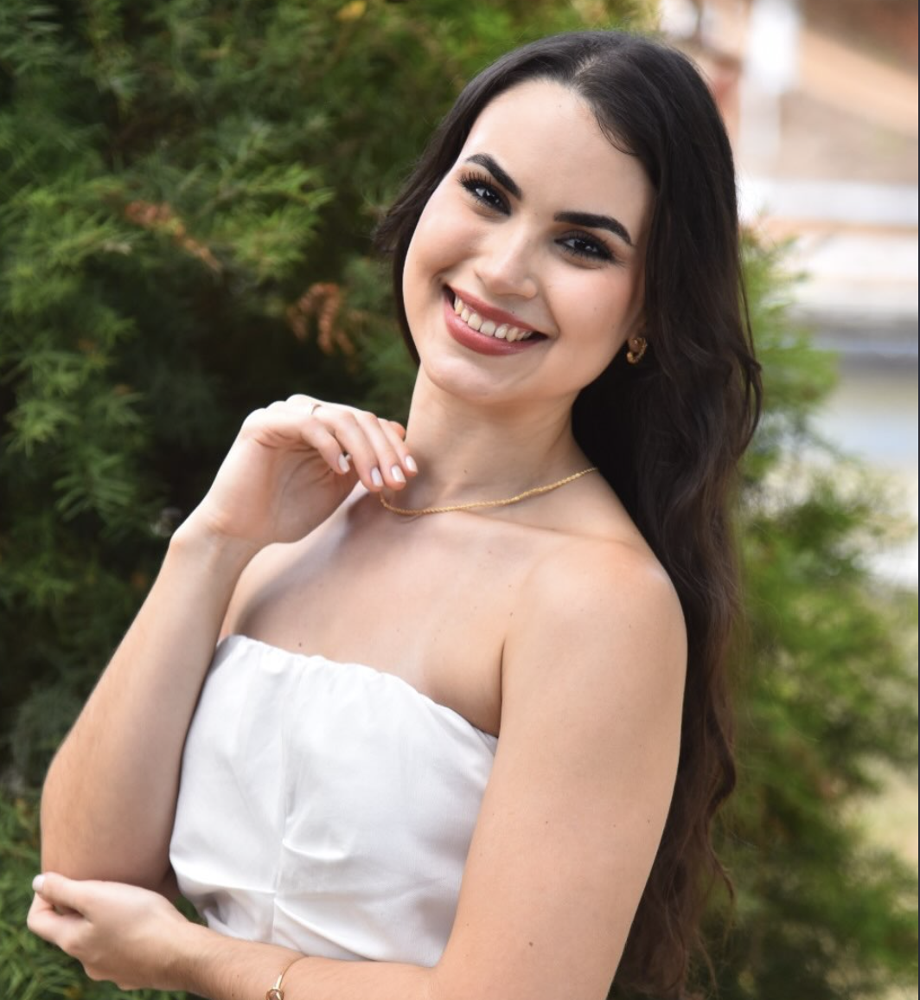

Nutrição Esportiva & Performance
Estratégias nutricionais para melhora do rendimento físico, hipertrofia e recuperação muscular pós-treino.
Acompanhamento nutricional individualizado, baseado em ciência, para quem busca emagrecer com saúde, ganhar massa muscular e elevar o rendimento físico — sem dietas restritivas e sem promessas milagrosas.

Sobre mim
Sou Andyara Fiorese, nutricionista especializada em emagrecimento e nutrição comportamental. Minha abordagem une evidência científica atualizada a um olhar humano e individual — porque cada corpo responde de um jeito, e nenhum plano alimentar deveria ser genérico.
Trabalho com atletas, praticantes de atividade física e pessoas que buscam emagrecer ou ganhar massa muscular sem recorrer a dietas restritivas extremas ou soluções da moda. O foco é construir hábitos sustentáveis, que caibam na sua rotina real.
Mais do que prescrever cardápios, acompanho cada etapa da sua evolução — ajustando estratégias conforme seus resultados, sua rotina de treino e sua vida.
100%
Baseado em evidências
CRN
26103188
Especialidades
Estratégias nutricionais para melhora do rendimento físico, hipertrofia e recuperação muscular pós-treino.
Perda de gordura corporal com preservação de massa magra, sem restrições extremas ou efeito sanfona.
Planejamento alimentar voltado à hipertrofia, com ajustes de acordo com sua evolução no treino.
Adequação da rotina alimentar, saúde intestinal e qualidade de vida a longo prazo.
Método de Atendimento
Anamnese detalhada, avaliação por bioimpedância e/ou dobras cutâneas, circunferência e acompanhamento por fotos para entender seu ponto de partida.
Prescrição alimentar personalizada, entregue via aplicativo, com substituições práticas para o seu dia a dia.
Suporte próximo entre as consultas para tirar dúvidas e ajustar o plano conforme sua rotina.
Retornos periódicos com reavaliação de medidas e ajustes finos de estratégia para performance contínua.
Depoimentos
★★★★★"Perdi 8kg de gordura mantendo minha força no treino. O acompanhamento próximo fez toda a diferença nos ajustes."
★★★★★"Ganhei massa muscular de forma consistente sem passar fome. O plano se encaixou perfeitamente na minha rotina."
★★★★★"Depois de anos tentando dietas restritivas, finalmente encontrei um acompanhamento que respeita meu corpo e minha rotina."
Vamos começar?
Agende sua consulta e dê o primeiro passo para um acompanhamento nutricional feito sob medida para o seu corpo e seus objetivos.
Falar no WhatsApp agora